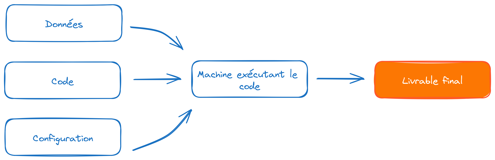

Rencontres 2026
2026-06-17
Mettre en production
Faire vivre une application dans l’espace de ses utilisateurs
Les trois commandements d’Hadley (Wickham et Masiello 2025):
3 cycles de vie différents à gérer:

| Type d’output | Exemples |
|---|---|
| API | Exposer un modèle ML pour servir ses prédictions |
| Base de données | Pipeline automatisé avec un ETL quotidien, chaîne de traitement de données |
| Application web | Tableau de bord, outil métier |
| Rapport automatique | Note générée sans intervention |
Note
Le package n’est pas toujours le moyen de partage de code le plus adapté
data.frame comme objet centralshiny (effet wahou), tidyverse (grammaire) RStudio (IDE tout en un) ont permis à de nouveaux profils de se mettre à RRR Markdown avant QuartoJupyterR:
install.packages vs pip installrenv vs uvGit)
R ?Shiny au lieu de Quarto + Javascript)Python plus contraignant sur la modularité que Rargparse (>=3.2, 2011) venv (>=3.3, 2012), pathlib (>=3.4, 2014), type hinting (>=3.5, 2015), f-string (>=3.6, 2016), tomllib et amélioration du traceback (>3.11, 2022)…Jupyter notebooksPython.En pratique : c’est plus nuancé.
Les limites sont moins dans les outils que dans les pratiques et la culture :
Rencontres 2026